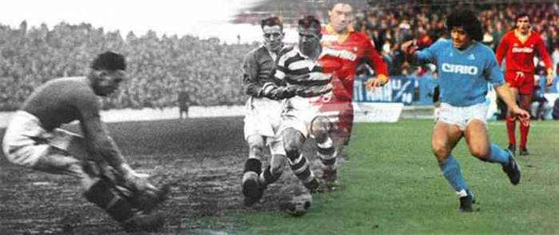

Istoria fotbalului
Istoria fotbalului (soccer)
Fotbalul (sau soccer cum se numește jocul în unele părți ale lumii) are o istorie lungă. Fotbalul în actuala sa forma a apărut în Anglia la mijlocul secolului al XIX-lea. Dar versiunile alternative ale jocului existau mult mai devreme și fac parte din istoria fotbalului.
Istoria timpurie și precursorii fotbalului
Primele exemple cunoscute ale unui joc de echipă care implică o minge, care a fost făcută dintr-o stâncă, au apărut în vechiul
Mesoamerican culturi de peste 3.000 de ani în urmă. Conform surselor, mingea ar simboliza soarele și căpitanul
pierderea echipei ar fi sacrificată zeilor.
Primul joc de minge cunoscut care a implicat și lovituri a avut loc în China în secolele al III-lea și al II-lea î. Hr sub
numele Cuju . Cuju a fost jucat cu o minge rotundă pe o zonă a unui pătrat. Ulterior s-a răspândit în Japonia și a fost
practicat sub forme ceremoniale.
O altă varietate anterioară de jocuri cu minge fusese cunoscută din Grecia Antică. Mingea a fost făcută din mărunțișuri de piele
umplut cu păr (primele documente ale bilelor umplute cu aer sunt din secolul al VII-lea). În Roma Antică, jocuri
cu bile nu au fost incluse în divertismentul pe marile arene, dar ar putea apărea în exerciții în armată.
Cultura romană a adus fotbalul pe insula britanică (Britannica). Cu toate acestea, este incert
gradul în care poporul britanic a fost influențat de această varietate și în ce grad și-au dezvoltat propriul
variante.
Jocul de fotbal își capătă forma
Cea mai admisă poveste spune că jocul a fost dezvoltat în Anglia în secolul al XII-lea. În acest secol, jocuri care asemănat cu fotbalul se jucau pe pajiști și drumuri din Anglia. Pe lângă lovituri, jocul implica și pumni a mingii cu pumnul. Această formă timpurie de fotbal a fost, de asemenea, mult mai aspră și mai violentă decât modul modern joc. O caracteristică importantă a înaintașilor la fotbal a fost că jocurile implicau mulți oameni și au luat loc pe suprafețe mari din orașe (un echivalent a fost jucat în Florența din secolul al XVI-lea unde a fost numit Calcio). Răzbunarea acestor jocuri ar provoca pagube în oraș și uneori moarte. Acestea ar fi printre motive pentru proclamările împotriva jocului care a fost interzis în cele din urmă de câteva secole. Cu exceptia jocurile asemănătoare cu fotbalul s-ar întoarce pe străzile Londrei în secolul al XVII-lea. Ar fi interzis din nou în 1835, dar în această etapă jocul fusese stabilit în școlile publice.
A durat însă mult timp până când trăsăturile fotbalului de astăzi au fost puse în practică. Pentru mult timp nu exista o distincție clară între fotbal și rugby. Au fost, de asemenea, multe variații în ceea ce privește mărimea mingea, numărul de jucători și durata unui meci.
Jocul s-a jucat adesea în școli și două dintre școlile predominante erau Rugby și Eton. La Rugby regulile a inclus posibilitatea de a lua mingea cu mâinile și jocul pe care îl cunoaștem astăzi drept rugby își are originea aici. La Eton, pe de altă parte, mingea s-a jucat exclusiv cu picioarele și acest joc poate fi văzut ca fiind aproape predecesor al fotbalului modern. Jocul din Rugby a fost numit „jocul de alergare” în timp ce jocul din Eton era numit „jocul driblingului”.
O încercare de a crea reguli adecvate pentru joc a fost făcută la o întâlnire din Cambridge în 1848, dar o soluție finală pentru
toate întrebările de reguli nu au fost realizate. Un alt eveniment important din istoria fotbalului a avut loc în 1863 în
Londra când s-a format prima asociație de fotbal în Anglia. S-a decis că purtarea mingii cu
mâinile nu aveau voie. Ședința a avut ca rezultat și o standardizare a mărimii și a greutății mingii. A
consecința întâlnirii de la Londra a fost că jocul a fost împărțit în două coduri: fotbalul și rugby.
Totuși, jocul va continua să se dezvolte mult timp și există încă multă flexibilitate în ceea ce privește
reguli. În primul rând, numărul jucătorilor de pe teren poate varia. Nici uniformele nu au fost folosite pentru a distinge
apariția echipelor. De asemenea, a fost obișnuit și jucătorii care poartă căciuli - antetul încă trebuia să facă parte din joc
inca. Citire ulterioară:Dezvoltarea regulilor fotbalului.
O altă diferență importantă în această etapă ar putea fi observată între echipele engleze și scoțiene. Întrucât englezii
echipele au preferat să alerge înainte cu mingea într-o manieră mai rugby, scoțianul a ales să paseze mingea între ele
jucătorii lor. Abordarea scoțiană a devenit predominantă în curând.
Sportul a fost la început un divertisment pentru clasa muncitoare britanică. Sume fără precedent de spectatori, până la
30.000, ar vedea marile meciuri de la sfârșitul secolului XIX. Jocul s-ar extinde curând de către popoarele britanice care
a călătorit în alte părți ale lumii. Mai ales în America de Sud și India ar deveni interesul pentru fotbal
mare.
Primele cluburi de fotbal
Cluburile de fotbal există încă din secolul al XV-lea, dar neorganizate și fără statut oficial. Prin urmare, este greu
pentru a decide care a fost primul club de fotbal. Unii istorici sugerează că a fost clubul Foot-Ball format în 1824 în
Edinburgh. Cluburile timpurii au fost adesea formate din foști elevi școlari, iar primele de acest fel au fost formate în
Sheffield în 1855. Cel mai vechi dintre cluburile profesionale de fotbal este clubul englez Notts County care a fost format în 1862 și există și astăzi.
Un pas important pentru apariția echipelor a fost industrializarea care a dus la întâlnirea unor grupuri mai mari de oameni
la locuri precum fabrici, pub-uri și biserici. Echipele de fotbal au fost înființate în orașele mai mari și în noile
căile ferate le-ar putea aduce în alte orașe.
La început, fotbalul a fost dominat de echipe de școli publice, dar mai târziu, vor face echipe formate din muncitori
până la majoritate O altă schimbare a avut loc succesiv atunci când unele cluburi au devenit dispuși să plătească cei mai buni jucători
să se alăture echipei lor. Aceasta ar fi începutul unei perioade lungi de tranziție, nu fără frecare, în care jocul
s-ar dezvolta la un nivel profesional.
Motivația din spatele jucătorilor plătitori nu a fost doar să câștige mai multe meciuri. În anii 1880 interesul pentru joc are
a mers mai departe la un nivel în care au fost vândute bilete la meciuri. Și în sfârșit, în 1885 a fost fotbalul profesionist
s-a legalizat și trei ani mai târziu a fost înființată Liga de Fotbal. În primul sezon, 12 cluburi s-au alăturat echipei
liga, dar în curând mai multe cluburi au devenit interesate, iar competiția s-ar extinde în mai multe divizii.
Multă vreme, echipele britanice ar fi dominante. După câteva decenii, cluburi din Praga, Budapesta și Sienna
ar fi principalii concurenți ai dominației britanice.
La fel ca în multe lucruri din istorie, femeile au fost mult timp excluse de la participarea la jocuri. Nu a fost înainte
la sfârșitul secolului al XIX-lea, când femeile au început să joace fotbal.
Primele competiții
 Urmează alte repere. Asociația Fotbal Challenge Cup (FA Cup)
a devenit prima competiție importantă când a fost condusă în 1871. În anul următor, un meci între două naționale
echipele au fost jucate pentru prima dată. Meciul care a implicat Anglia și Scoția s-a încheiat cu 0-0 și a fost urmat
4.000 de persoane la Hamilton Crescent (imaginea arată ilustrații din această ocazie).
Urmează alte repere. Asociația Fotbal Challenge Cup (FA Cup)
a devenit prima competiție importantă când a fost condusă în 1871. În anul următor, un meci între două naționale
echipele au fost jucate pentru prima dată. Meciul care a implicat Anglia și Scoția s-a încheiat cu 0-0 și a fost urmat
4.000 de persoane la Hamilton Crescent (imaginea arată ilustrații din această ocazie).
Doisprezece ani mai târziu, în 1883, a avut loc primul turneu internațional și a inclus patru echipe naționale: Anglia, Irlanda, Scoția și Țara Galilor.
Fotbalul a fost mult timp un fenomen britanic, dar s-a extins treptat și în alte țări europene. Primul joc care a avut loc în afara Europei a avut loc în Argentina în 1867, dar au fost lucrătorii străini britanici care au fost implicați și nu cetățeni argentinieni.
Asociația Fédération Internationale de Football (FIFA) a fost fondată în 1904 și un act de fundație a fost semnat de
reprezentanți din Franța, Belgia, Danemarca, Olanda, Spania, Suedia și Elveția. Anglia și celelalte
Țările britanice nu s-au alăturat FIFA de la început, au inventat jocul și nu au văzut de ce să se subordoneze
o asociere. Cu toate acestea, s-au alăturat în anul următor, dar nu au participat la Cupa Mondială până în 1950.
Ligi interne au avut loc în multe țări. Primul a fost, așa cum am menționat deja, Liga de fotbal engleză care
a fost înființată în 1888. Ligile s-ar extinde în timp cu mai multe divizii, care se bazau pe echipă
performanță.
În 1908, fotbalul va fi inclus pentru prima dată ca sport oficial la Jocurile Olimpice. Până la prima
Cupa Mondială FIFA s-a jucat în 1930, turneul de fotbal al Jocurilor Olimpice s-ar clasifica ca fiind cel mai prestigios pe
nivel național. Fotbalul feminin nu a fost adăugat până în 1996.
Jucători negri
La fel ca în multe alte sporturi, masculul alb a predominat mult timp. În fotbal jucătorii negri au început să fie prezent relativ timpuriu și în comparație cu, de exemplu, tenisul, fotbalul a fost cunoscut în mod tradițional ca a sport cu un mix de jucători alb-negru.
În Marea Britanie, Andrew Watson este cunoscut a fi primul negru jucător, iar el a jucat în clubul scoțian Queen’s Park în anii 1880.
A game of passion
 Puține alte exemple de spectacole sportive
de pasiune în această măsură ca fotbal. Arenele sunt aglomerate de forfecarea oamenilor; și în fața televiziunii chiar
mai mulți urmăresc cu atenție și uneori cu mare entuziasm.
Puține alte exemple de spectacole sportive
de pasiune în această măsură ca fotbal. Arenele sunt aglomerate de forfecarea oamenilor; și în fața televiziunii chiar
mai mulți urmăresc cu atenție și uneori cu mare entuziasm.
Deja la sfârșitul secolului al XIX-lea, Goodison Park a fost construit în Anglia în scopul de a găzdui jocuri de fotbal. În 1894,
la finala Cupei FA dintre județul Notts și Bolton Wanderers au participat 37.000 de oameni. O etapă importantă în
dezvoltarea stadioanelor de fotbal este construcția stadionului Maracanã. În anul 1950 stadionul impunător
la Rio de Janeiro era gata pentru aproape 200.000 de oameni. Niciun alt sport nu a văzut construite stadioane de această capacitate
gazduieste jocurile sale.
Pe arenă au existat două tradiții diferite ale culturii fanilor: britanicul și sud-americanul.
Fanii britanici au adoptat tradiția cântării, repertoriul s-a inspirat din cârciumă și cântece de lucru, printre altele
zone. Pe de altă parte, sud-americanii ar adopta stilul carnaval care a inclus petarde și
artificii și, de asemenea, fenomenele moderne ale incendiilor bengaleze. Fanii din alte țări au adoptat ulterior un amestec de
aceste tradiții.
Marile competiții moderne
Niciun alt eveniment sportiv în afară de Jocurile Olimpice de vară nu se poate măsura astăzi cu Cupa Mondială FIFA. Prima ediție a Cupei Mondiale FIFA s-a jucat în 1930 în
Uruguay și a revenit de atunci în fiecare al patrulea an (cu două excepții din cauza celui de-al doilea război mondial). În 1991
prima Cupa Mondială pentru femei a avut loc în China și de atunci a revenit și în fiecare al patrulea an.
Astăzi cel mai mare turneu global pentru cluburi este Champions League
(jucat din 1992), fosta Cupă a Campionilor Europeani (1955-1991).
Globalizarea celui mai mare sport de pe Pământ
La sfârșitul secolului 19, existau doar câteva echipe naționale de fotbal; Anglia și Scoția au avut primele echipe active
care a jucat jocuri reciproc în anii 1870. Astăzi există 211 de asociații naționale incluse în
Asociația Fédération Internationale de Football (FIFA), organul de conducere mondial al sportului. O altă dovadă a
globalizarea ar putea fi văzută în creșterea națiunilor care participă la calificările la Cupa Mondială: de la 32 in
1934 la peste 200 în 2014.
Regiunile lumii au fost împărțite în șase confederații: Confédération Africaine de Football (CAF), asiatică
Confederația de fotbal (AFC), Union des Associations Européennes de Football (UEFA), Confederația Nordului,
Asociația de Fotbal din America Centrală și Caraibe (CONCACAF), Confederația Fotbalului Oceaniei (OFC) și
Confederația Sudamericana de Fotbal (CONMEBOL).